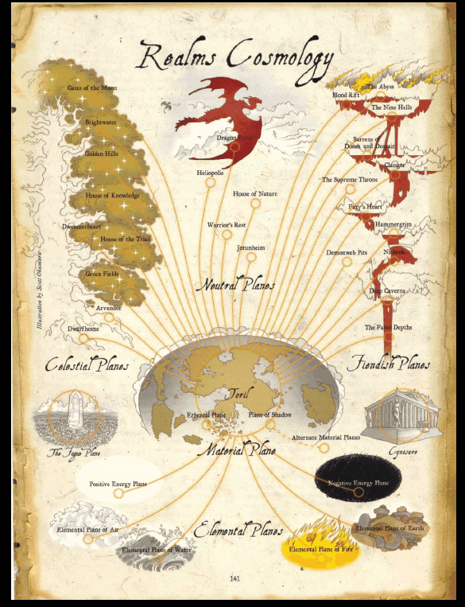

来自《费伦玩家指南》里的位面详述部分
托瑞尔的宇宙系统
如同在《被遗忘的国度战役设定集》中所指出的，涵盖托瑞尔(Toril)之位面系统与《地下城主指南》及《位面手册》中描述的标准D&D宇宙系统是有异且分隔的。D&D的宇宙系统可简易地类比为巨轮(great wheel)，而托瑞尔的宇宙系统则更像是有着许多枝丫的树木。

主物质位面、阴影位面和以太位面彼此共存，形成树木的主干。其枝丫便是内层位面(元素和能量位面)与外层位面。几乎所有的外层位面都有各自的较小分枝，那些就是神祇们的神力领域所居之处。这些领域几乎像是独立的半位面。
在D&D宇宙系统，星界如同无形云雾般包围其他位面，藉由星界旅行便可自某一位面至另一位面。但托瑞尔的星界和宇宙系统的树型结构合为一体。由于此种排列方式，使枝丫间的跃动 ─ 也就是指直接从内层位面或外层位面到另一处变的相当困难(但并非完全不可能)。在内层位面与外层位面间较自然 ─ 且较安全 ─ 的旅行方式是取道主干(主物质位面)。因为拥有改变领域环境的能力，只要双方同意，神祇可以创造一个直接通向其他神祇领域的连结。不过在无神力影响的情形下，此种直接连结不可能形成。
托瑞尔宇宙系统中有三个特别的位面：无底深渊(Abyss)、九层地狱(Nine Hells)和血之裂隙(Blood Rift)。这些位面都没有神祇居住(但有些人把住在此处的魔鬼君主们视为神祇，或至少为类神)，且此三位面彼此相连接。实际上，这些邪恶位面形成了为与宇宙系统中的独特枝丫 ─ 九层地狱和无底深渊的原生生物，特别是著名恶魔及妖魔间永恒争战的场所。血之裂隙的住民优格罗斯魔们则是成为永恒战争的佣兵，追寻它们那神秘的目标。
《地下城主指南》提供了关于位面旅行的充足资讯，让你可应用此章节于被遗忘的国度战役剧情中。另外，《位面手册》包含了大量位面相关资讯，从法术进阶职业到怪物，可以用来扩充托瑞尔的位面冒险。此章提供额外的扥瑞尔相关资讯，可协助你使用来自《位面手册》的资源。
位面旅行
扥瑞尔的独特星界使位面旅行同时变的简单与复杂。自主物质位面到另一位面十分容易，如同标准D&D宇宙系统运用的方式。人物只需施展适当的法术 (异界传送或星界投射)以进入星界，随之到通往目标位面的五彩池，通过她便可抵达目的位面。唯一不同之处在于，人物一但打算前往某个特定位面，只有通往相应位面的五彩池会出现在她的路上。此效应类似《位面手册》中描述的隧道式星界。一但人物开始朝向某特定位面前进，她就不能改变心意循原路返回再前往另一位面。想改变路线就必须再次进入主物质位面，然后取道星界至另一相异位面。
从某个外层位面旅行到另一个就稍微复杂一些。除了经由主物质位面，一般的星界旅行无法使人物直接从某个位面到另一个。人物或怪物可以使用异界传送，直接从主物质位面到另一位面，反之亦然，但不能从某个内层位面或外层位面到另个内层位面或外层位面。
如同《位面手册》所述，阴影位面是扥瑞尔与其他世界宇宙系统间的主要联系。阴影位面连接扥瑞尔与其他世界的主物质位面，包括D&D核心书籍默认的世界 ─ 灰鹰世界。当然，如费伦此种具有大量魔法传送门的地区，肯定有着经由阴影位面联系其他主物质位面的特殊传送门。部分学者指出此种连结便是某些冠有灰鹰大法师名号之法术，例如奥图迷舞、欧提路克冰封法球、谭森变形术和多种毕格比之掌系列法术的来源。
跨位面特征
某些位面特征跨越多个位面，违抗了星界的树型结构。反向来说，这些特征之一是棵树 ─ 所谓的世界树(World Tree)联系着所有善良位面。另一个是条河 ─ 血之河(River of Blood)流过多数邪恶位面。此水路类似《位面手册》中所说的冥河。
世界树
这棵巨大的”树”连接多个星界树的天界分枝。自其位于精灵国度(Arvandor)及矮人之家(Dwarfhome)的根部，世界树穿过所有善良位面到月之门(Gate of the Moon)。明水之殿(Brightwater)、金色丘陵(Golden Hill)和知识之殿(House of Knowledge)则是连着世界树的主干，它的低叉分枝通向咒文之心(Dweomerheart)、三神之殿(House of the Triad)和翠绿原野(Green Fields)。如同善良神祇的天界服侍者们般，勇敢的位面旅者可使用世界树往返善良位面而不需通过主物质位面。但这条路线有其危险性，因为此树具有知性且明显不愿被当作位面阶梯使用。想要成为旅者的人会遇上致力阻挡其路的天界树人和树精，但这些守护者也曾让有着良好理由的旅者通过。
血之河
一条宽广而恶臭的河流通过大多数邪恶位面，提供类似联结善良位面之世界树般的联系。它的泉源据说是在无底深渊的某处，在该位面、血之裂隙和九层地狱也流动的特别强劲。在流入定命深泽(Fated Depths)的暗水前，它也蜿蜒通过毁灭与绝望之荒原(Barrens of Doom and Despair)、锐声战场(Clangor)、狂怒之心(Fury’s Heart)、严厉之锤(Hammergrim)和兽人之土(Nishrek)。在邪恶位面间，只有至高王座(Supreme Throne)和深坑魔网(Demonweb Pits)未涉及血之河。如同世界树，精明的旅者可以使用血之河往返邪恶位面，但是非常危险。所有种类的魔鬼在河中游动，或在河岸埋伏，试着捕捉不谨慎的旅者，有些甚至在粘滞的河面上导引小船。任何落入血之河或在其内游泳的凡人会丧失所有记忆。
随机位面终点
下列表格之功能与《地下城主指南》表格5-7相同。
表格6-1：随机位面终点
d% 位面
01 极星营帐 (Cynosure)
02-03 朦胧之域 (The Fugue Plane)
善良外层位面
04-06 精灵国度 (Arvandor)
07-10 明水之殿 (Brightwater)
11-13 矮人之家 (Dwarfhome)
14-16 咒文之心 (Dweomerheart)
17-20 月之门 (The Gate of the Moon)
21-23 金色丘陵 (Golden Hill)
24-26 翠绿原野 (Green Fields)
27-30 知识之殿 (House of Knowledge)
31-34 三神之殿 (House of the Triad)
邪恶外层位面
35-36 无底深渊 (The Abyss)
37-40 毁灭与绝望之荒原 (The Barrens of Doom and Despair)
41-42 血之裂隙 (Blood Rift)
43-45 锐声战场 (Clangor)
46-48 幽深洞窟 (Deep Carvens)
49-52 深坑魔网 (The Demonweb Pits)
53-55 定命深泽 (Fated Depths)
56-59 狂怒之心 (Fury’s Heart)
60-62 严厉之锤 (Hammergrim)
63-64 九层地狱 (The Nine Hells)
65-67 兽人之土 (Nishrek)
68-70 至高王座 (The Supreme Throne)
中立外层位面
71-73 龙之巢 (Dragon Eyrie)
74-77 太阳之殿 (Heliopolis)
78-81 自然之殿 (The House of Nature)
82-85 巨人之乡 (Jotunheim)
86-88 战士之眠 (Warrior’s Rest)
内层位面
89-90 风元素位面 (Elemental Plane of Air)
91-92 土元素位面 (Elemental Plane of Earth)
93-94 火元素位面 (Elemental Plane of Fire)
95-96 水元素位面 (Elemental Plane of Water)
97-98 正能量位面 (Positive Energy Plane)
99-100 负能量位面 (Negative Energy Plane)
位面特性
标准D&D宇宙系统的位面主要是用阵营识别，而扥瑞尔的外层位面完全是以居住在该处的神祇来区隔。每个位面都是一小群神祇、种族神系或是 ─ 某种特例 ─ 单独一位神祇的领域。某个位面若有阵营特性，是源自住在该处的神祇，而非其他周遭因素。
除了《Dungeon Master’s Guide》里列举的位面特性，几乎所有托瑞尔宇宙系统中的位面都具备信仰特性，取代了阵营特性。在具有中度信仰特性的位面，任何非信仰该处任一神祇的访客，在所有以魅力为基础的检定上都要受到-2减值。在具强烈信仰特性的位面也受到相同减值。此外，信仰与该位面住民相对之神祇者(位面叙述中有特别说明)，其以智力和睿智为基础之检定也要受到相同减值。
位面叙述
此部份提供托瑞尔宇宙系统中所有位面的简要说明，包括其位面特性(如同《Dungeon Master’s Guide》所述)，并将来自《Monster Manual》、《Forgotten Realms Campaign Setting》和《Monsters of Faerun》的该位面原生生物进行列表。少数源自他处的怪物也一并列出。这些会在该怪物的专属段落中标明。
托瑞尔的以太位面和内层位面与《Dungeon Master’s Guide》中所述相同，此部份便不再次说明。另外，星界主要是形状有异，在本章起始处已说明。《Dungeon Master’s Guide》与托瑞尔宇宙系统星界之功能差异，就是在后者跨越位面时一定得经过主物质位面。
元素领主Grumbar、Akadi、Istishia及Kossuth在元素位面拥有领域。